The American Physician Scientists Association (APSA) South Regional Meeting is an APSA-sponsored conference designed to facilitate mentorship and collaboration for those interested in physician scientist careers. The meeting is taylored towards trainees in the South region.
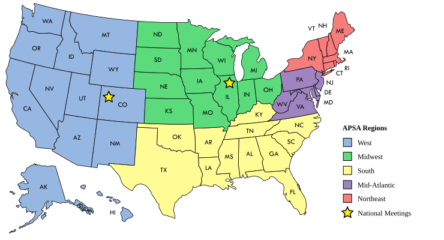
This conference welcomes all MD/PhD, DO/PhD, MD, DO and health sciences students, as well as undergrads and postbacs who are interested in learning about physician scientist careers. Residents, fellows, postdocs, and faculty are also welcome to attend as mentors.
Registration will open in October for all participants. There is no cost to register. If you want to cancel your registration, please email Daniel Brock (daniel.brock@physicianscientists.org)
Registrants and scholarship applicants will be notified if they were selected to attend the conference in late-January, 2025.
Abstract submission will open on October 31, 2024 and extend until January 10, 2025.
Everyone is welcome to submit abstracts for poster sessions or oral talks. Posters are automatically entered into a judging competition with cash prizes. Poster judging will be split, according to trainee level of education. All oral speakers will be eligible for cash prizes!
Click here for abstract and poster guidelines and here for oral talk guidelines.
Abstract word length: 450 words maximum
Please upload a word document when you register!
Poster sizing: keep your poster within 48 x 36 inches in dimensions.
Travel scholarships up to $750 are available upon registration for undergraduates/postbacs. $250 travel scholarships are available to current MD/PhD students. Eligible recipients must be outside the Houston metro area. The selection process will be need-based, with an emphasis on encouraging attendees from diverse backgrounds.
8:00-8:45am

Breakfast with Mentors
~Everyone
8:45-9:30am
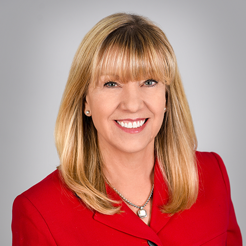
Professional Development Keynote
Dr. Dianna Milewicz
9:30-10:45am
Poster Session
MD/PhD Students
10:45am-12:00pm
Poster Session
Undergraduates & Postbacs
12:00am-1:00pm
Lunch with Specialties of Interest & Mentors
~Everyone
1:00-2:00pm
Student Speaker Session
MD/PhD Students & Undergradudates & Postbacs
2:00-3:00pm
Inclusion and Equity in Medical Research
Drs. Rayne Rouce MD, Michael Scheurer PhD MPH, and Debra Murray PhD
3:00-3:15pm
Break
~Everyone
3:15-4:45pm
Strategies for Strong MD/PhD Applications
Speakers: MD/PhD Program Directors and Students
Audience: Undergraduates & Postbacs
3:15-4:45pm
Making the Most of Your MD/PhD Training
Speakers: Senior MD/PhD Students (MS4)
Audience: Early MD/PhD Students (MS1 - GS2)
3:15-4:45pm
Pathways to Productivity as a Physician Scientist
Speakers: Recent MD/PhD Graduates
Audience: Senior MD/PhD Students (GS4+ - MS4)
3:15-4:45pm
A Day in the Life of a Physician Scientist: Finding Balance
Speakers: Practicing Physician Scientists
Audience: ~Everyone
4:45-5:00pm
Concluding Remarks and Awards
~Everyone
Dianna M. Milewicz, MD, PhD
McGovern Medical School
You can travel by flight to Houston Intercontinental Airport (IAH) or Hobby Airport. For those traveling by car, parking will be covered in garages 6, 4, 10, and 5. Travel grant recipients will be accomodated for travel expenses, up to $750 for undergraduates/postbacs and $250 for MD/PhD students.
If you plan to stay overnight in Houston, please consider booking a hotel in the Texas Medical Center, such as the Houston Marriott Medical Center/Museum District hotel.
Lunch and Breakfast will be provided. Breakfast will be provided by (catering company to come) and lunch will be provided by (catering company to come).
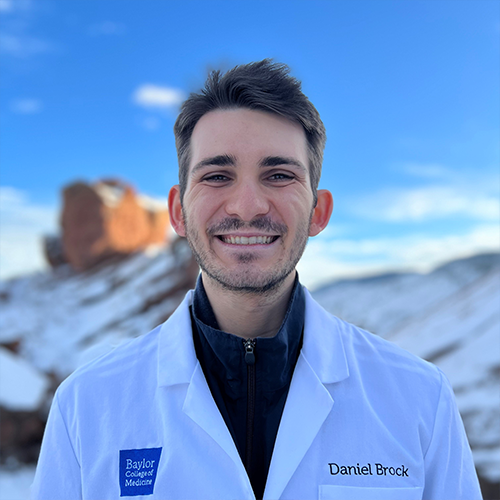
Daniel Brock, GS1
APSA South Representative
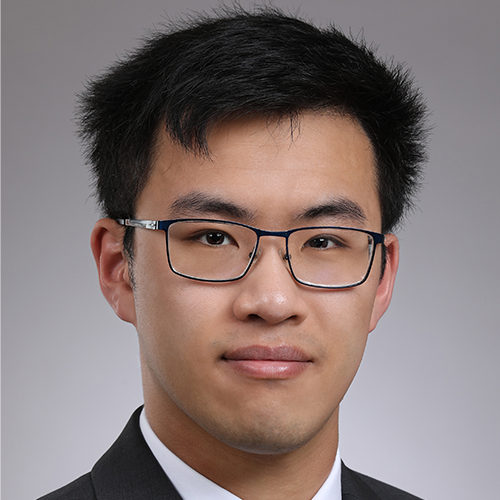
Cory Pan, MS2
Abstracts Chair
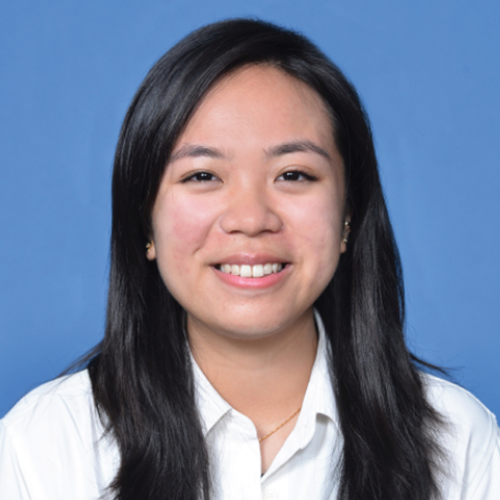
Michelle Nguyen, MS2
Abstracts Chair
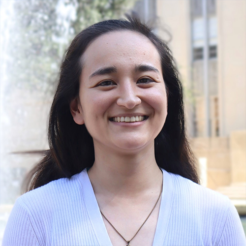
Claudia Tischler, GS3
Fundraising Team, Oral Presentations
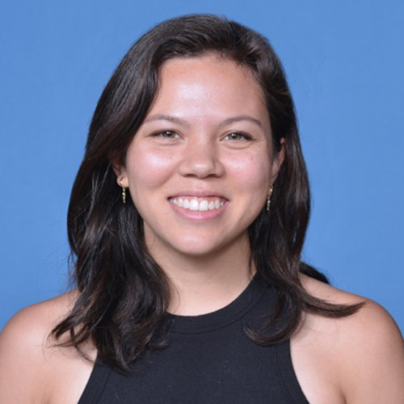
Aulden Foltz, MS2
Fundraising Team
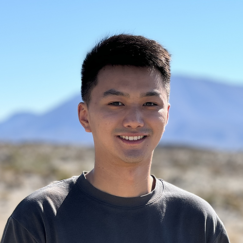
Yifan Chen, GS1
Abstracts Chair
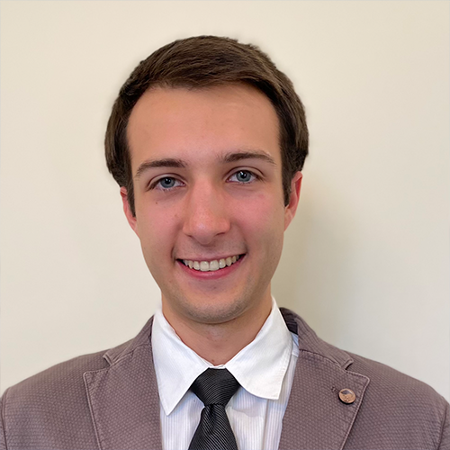
Alexander Karamyshev, MS2
Institutional Representative
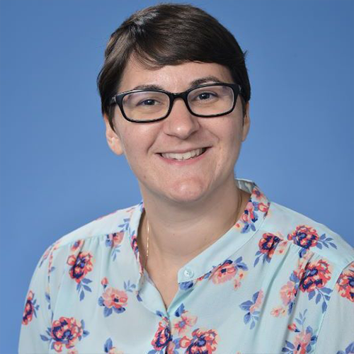
Christina Magyar, GS3
Panelists, Posters Chair
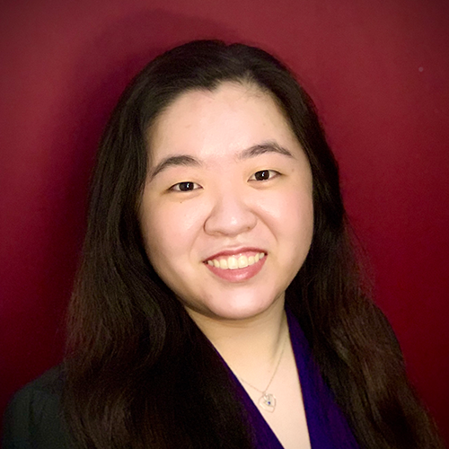
Jessica Wang, GS1
Social Media/Outreach Chair
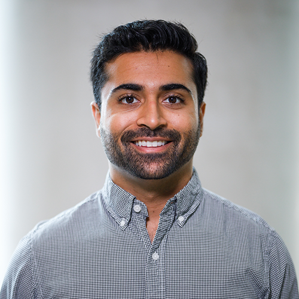
Yajur Maker, GS5
Social Media/Outreach Chair
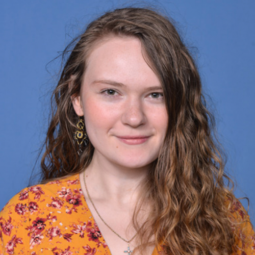
Anna Burkhalter, MS2
Panelists Chair